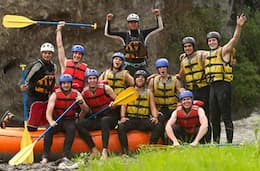
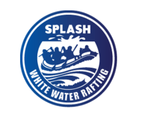
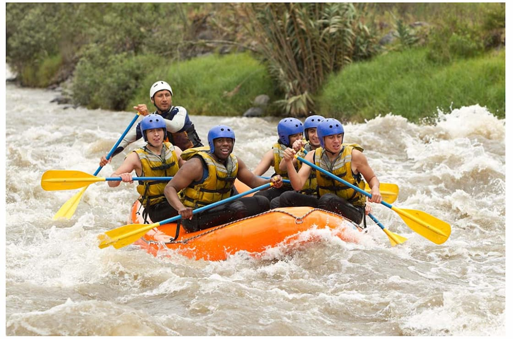

At Splash White Water Raft, we exist to turn the river's raw power into unforgettable adventure — guiding every paddler through the rush, the roar, and the reward of conquering the rapids together.



At Splash White Water Raft, we exist to turn the river's raw power into unforgettable adventure — guiding every paddler through the rush, the roar, and the reward of conquering the rapids together.
Splash White Water Raft was founded in 1987 by a small crew of river guides who believed the rapids deserved more than a weekend hobbyist's approach. What began as a single raft and a rented van shuttling thrill-seekers down a stretch of class III whitewater has since grown into a full-scale outfitter, running guided trips across multiple rivers and training generations of guides along the way. Through decades of changing currents — literal and otherwise — the company has stayed true to its founding creed: respect the river, trust your crew, and never lose the thrill of the first drop.